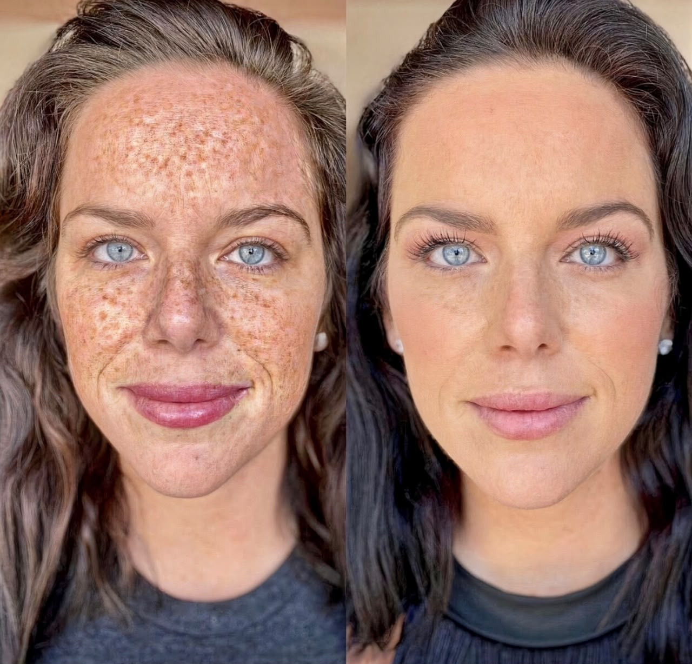
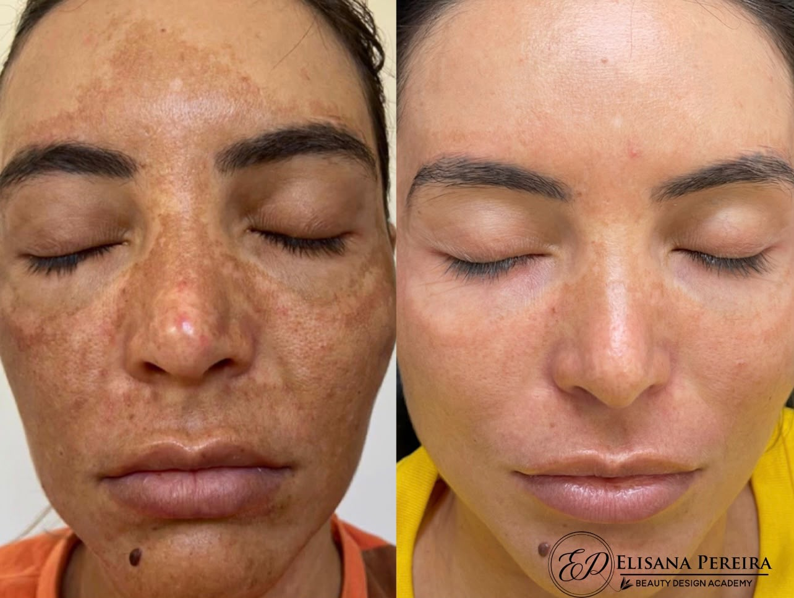
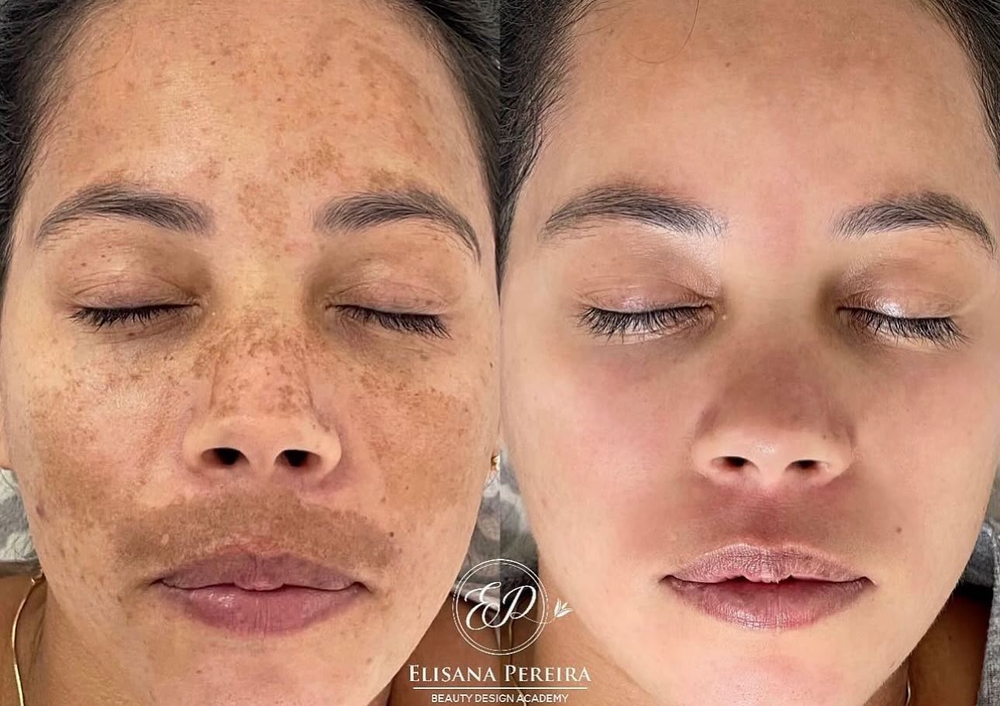
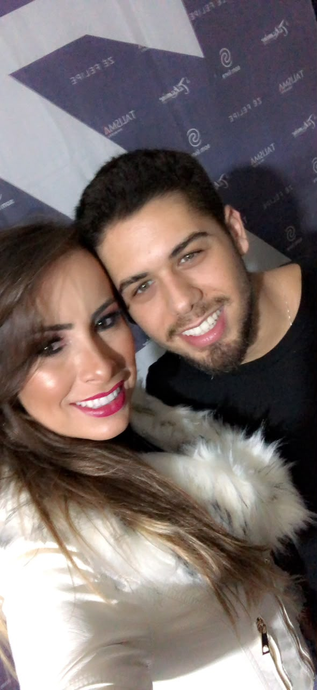
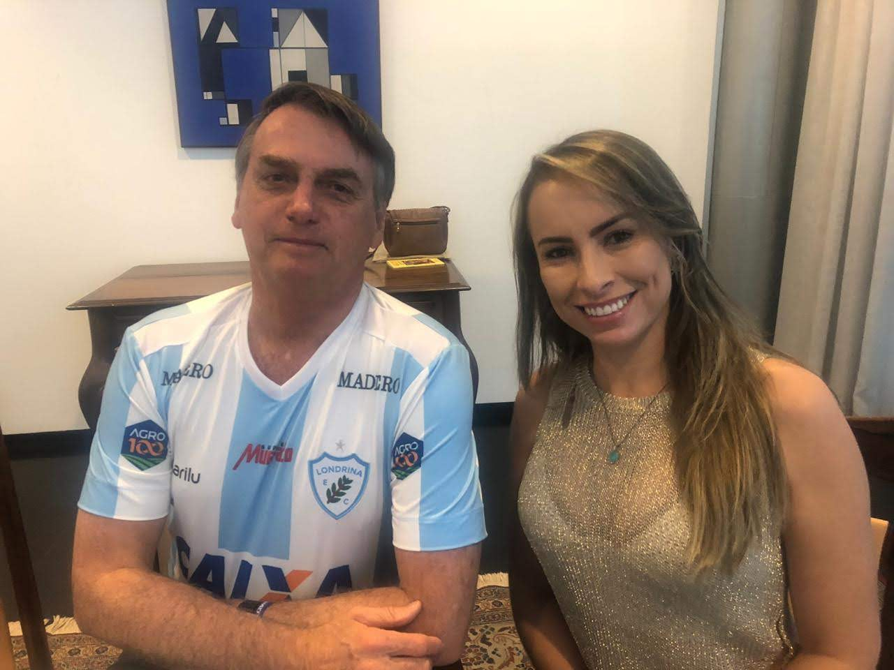

Sobrancelhas
Micropigmentação de Sobrancelhas
Design personalizado para valorizar o olhar com naturalidade, equilíbrio e harmonia facial.
Saiba maisEstética & Micropigmentação
Micropigmentação de sobrancelhas, micropigmentação labial e cuidados estéticos personalizados para peles com manchas.
Design personalizado para valorizar o olhar com naturalidade, equilíbrio e harmonia facial.
Saiba mais
Técnica delicada para realçar a cor dos lábios, melhorar o contorno e valorizar a beleza natural.
Saiba mais
Protocolos estéticos personalizados para auxiliar no cuidado de peles com manchas e hiperpigmentação.
Saiba maisElisana Pereira atua na área da estética com foco em procedimentos que valorizam a beleza natural, respeitando as características individuais de cada cliente.
Seu atendimento é feito com cuidado, escuta e atenção aos detalhes, buscando oferecer uma experiência segura, acolhedora e personalizada.
Entre seus atendimentos estão micropigmentação de sobrancelhas, micropigmentação labial e cuidados estéticos para peles com manchas, sempre com orientação individual para cada caso.
Elisana atende em Lavras, Minas Gerais, e também em cidades da região.
Elisana Pereira atende em Lavras, MG, e também em várias cidades da região.
Lavras
Campo Belo
Varginha
Perdões
Belo Horizonte
Santo Antônio do Amparo
Três Pontas
Boa Esperança
Cana Verde
Cruzília
Alterosa
Areado
Minduri
Candeias
Nepomuceno







Cada resultado pode variar de acordo com a pele, procedimento e cuidados de cada cliente. As imagens apresentadas são referências dos trabalhos realizados.
“Atendimento com muito cuidado, atenção e profissionalismo. Me senti segura durante todo o procedimento.”
“Gostei muito do resultado. Ficou delicado, natural e combinou com o meu rosto.”
“Excelente atendimento, ambiente acolhedor e resultado feito com muito capricho.”
Veja algumas dúvidas comuns sobre os procedimentos e o atendimento.
Sim. O objetivo é realçar a beleza natural, respeitando o formato do rosto, tom de pele e características individuais de cada cliente.
Sim. A avaliação é importante para entender o objetivo da cliente, analisar a pele e indicar o procedimento mais adequado.
A duração pode variar de acordo com a pele, cuidados após o procedimento, exposição solar e características individuais.
O procedimento pode ajudar a realçar a cor e o contorno dos lábios, buscando um resultado delicado e harmonioso.
Elisana atende em Lavras, MG, e também em cidades da região, como Campo Belo, Varginha, Perdões, Três Pontas, Boa Esperança e outras.
Alguns cuidados ajudam a tornar a experiência mais segura e tranquila. As orientações finais devem sempre ser passadas pela profissional no atendimento.
Fale pelo WhatsApp ou envie uma mensagem preenchendo o formulário abaixo.